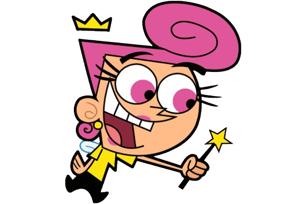

Characters |
Description |
Abilities |
|---|---|---|
Timmy Turner |
The main protagonist of "The Fairly OddParents". A ten year old boy described as an average kid that no one understands. He is proud, selfish and arrogant but at the same time he is brave, heroic, loving and caring Later he was given two magical fairy godparents who were Cosmo and Wanda. |
|
Cosmo |
One of the fairy godparents of Timmy Turner, he isn't the brightest in logical sense but a very excited and outgoing personality. He has no specified age but it is assumed that he is more than a thousand years old. Comparing to Wanda(his wife), he is less intelligent and more gullible than Wanda. |
|
Wanda |
One of the fairy godparents of Timmy Turner, she is a responsible, compassionate and smart fairy. She has no specified age but it is assumed that she is more than a thousand years old. Comparing to Cosmo(her husband), she is more logical and cautious than Cosmo. |
|